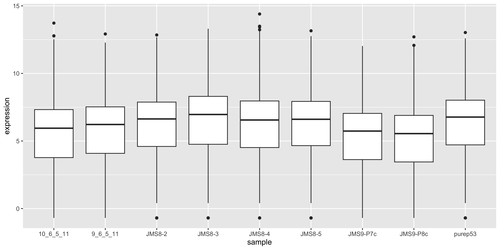
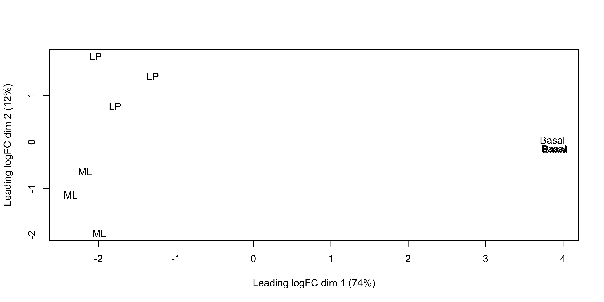
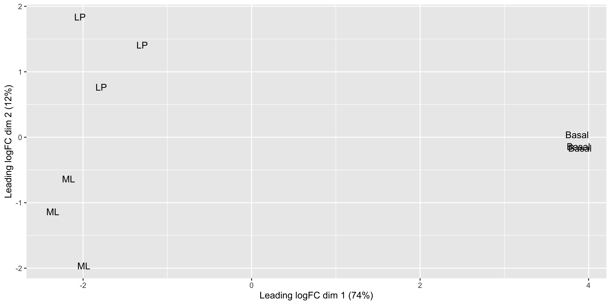
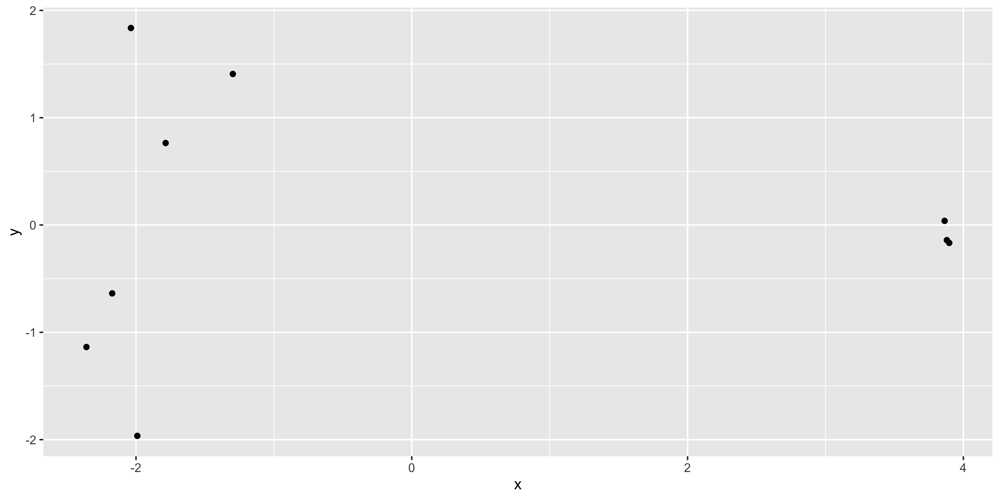
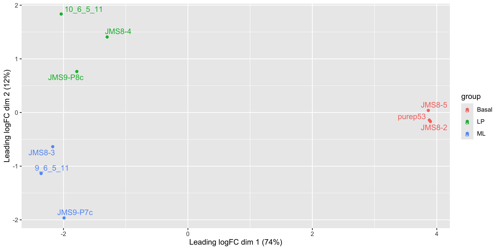

# load required packages
library(tidyverse)
library(edgeR)
group <- parse_factor(
c("LP", "ML", "Basal", "Basal", "ML", "LP", "Basal", "ML", "LP"),
levels = c("Basal", "LP", "ML")
)
samplenames <- c(
"10_6_5_11", "9_6_5_11", "purep53", "JMS8-2", "JMS8-3",
"JMS8-4", "JMS8-5", "JMS9-P7c", "JMS9-P8c"
)5 Session 5: RNA-seq part 1
In this session we will run through the basic steps for analysing a simple RNA-seq experiment using the limma-voom workflow. This includes:
- filtering out lowly expressed genes
- normalisation
- creating a multidimensional scaling (MDS) plot
- creating a design matrix
- fitting gene-wise linear models (with empirical Bayes moderation to more accurately estimate gene-wise variability)
- performing statistical testing for differential expression The aim of this session is to give you experience with a real-world RNA-seq analysis, and making extensive use of an external library. We will not cover the statistics in any depth. The focus is on the practical aspects of using the
limmapackage to perform RNA-seq analysis. Thelimmapackage is a widely used package for analysing microarray and RNA-seq data, and it provides a range of functions for normalisation, filtering, statistical testing and visualisation. The aim of this session is to give you experience with a real-world RNA-seq analysis, and making extensive use of an external library. We will not cover the statistics in any depth. Instead, the goal is to understand how to construct data structures required for specific packages and how to use the functions in those packages to perform the analysis.
Much of the materials here are explained in greater detail in the limma user’s guide. You can view this by typing help("limma") and following the links.
Learning Objectives
- Constructing a
DGEListobject to use with theedgeRpackage - Performing filtering of lowly expressed genes
- Normalising RNA-seq data to account for library size and RNA composition
- Performing exploratory data analysis using MDS plots
- Pulling data out of
edgeRpackage objects and re-organising it into a tidy format for use withggplot2.
5.1 Loading in read count data and annotation
The data we are looking at comes from three cell populations (basal, luminal progenitor (LP) and mature luminal (ML)) sorted from the mammary glands of female virgin mice, each profiled in triplicate. These samples have been sequenced using Illumina RNAseq platforms and we will be using the edgeR package to analyse the data.
To use the edgeR package we first need to construct a DGEList object. This object contains 3 key pieces of data:
counts: the main data of this object, a matrix of count values with samples along the columns and features/genes along the rows.samples: a data frame containing annotation for the samples. The rows in this table describe the corresponding column of the counts data.genes: a data frame containing annotation for the genes in the counts matrix. The rows in this table describe the corresponding row in the counts matrix.
Data objects
Data objects in general are a way to store related pieces of information together. Often they provide features to maintain the relationships between the pieces of information. For example, in a DGEList object, the counts are stored as a matrix while samples and genes are stored as data frames. When you subset the DGEList object, the rows and columns of the counts matrix are subset along with the corresponding rows of the samples and genes data frames. This prevents errors that can occur if the user tries to manually subset all three pieces of information separately.
5.2 A brief detour to factors
Not that when we declared the group variable, we used factors. Factors are a special data type that is used to encode categorical variables. They have multiple useful properties in comparison to regular character vectors: - They allow you to specify the order of the levels. - They are stored as integers but displayed as labels. - They encode all the valid levels of the factor, even if they are not present in the data.
Specifying the order of the levels is useful because it allows you to re-arrange labels when used in plots. In this data we would have the “Basal” group first, followed by “LP” and then “ML”. Using parse_factor() also allows you to check that the values are all valid levels, for example if one of the samples was labelled “Bassal” instead of “Basal”, it would throw an error. You can read the R for Data Science chapter on factors for more information, as well as the forcats package for many useful functions for working with factors.
5.3 Creating the DGEList object
We will create a DGEList object following the RNAseq123 workflow. We use the readDGE() function to read in count data from files, and provide sample information to the readDGE() function and adding in the gene annotation information afterwards.
# vector of file names
files <- dir(path = "data/counts", pattern = "GSM*")
# create DGEList object
dge <- readDGE(
files,
path = "data/counts",
columns = c(1, 3),
group = group,
labels = samplenames
)
# add gene annotation information
gene_anno <- read_tsv("data/Ses3_geneAnnot.tsv")
dge$genes <- gene_anno5.4 Alternative construction of the DGEList object
A more common way to create a DGEList object is to read in the count data as a matrix and then create the DGEList object using the DGEList() function. We can pull apart our existing DGEList object and recreate it using this method.
What you can do with data objects is determined by package that the object comes from. You will need to read the package documentation to find out how to access data from the object. Here edgeR informs us that the DGEList has data that can be accessed as if it was a list.
counts <- dge$counts
samples <- dge$samples
genes <- dge$genes
# create DGEList object
dge <- DGEList(counts = counts, samples = samples, genes = genes)Now we have a data object that can be used for downstream analysis.
5.5 Filtering
The first step of our analysis is to filter out lowly expressed genes. There are two main problems with low abundant genes:
- Technical variation is more problematic for low abundance genes. This variation is thought to be due to two factors; insufficient mixing and low sampling fraction1.
- Insufficient mixing of solutions during library preparation can result in uneven distribution of reads.
- RNA sequencing can be thought of as sampling. Measurement errors will occur simply due to the random nature of the sampling process. This problem affects lowly abundant RNA species more because the relative error for small count values is larger than it would be for more highly abundant RNA species.
- Genes that are very lowly expressed do not produce sufficient information to be useful for biological interpretation. For example, it is very hard to believe the biological significance of genes that have counts ranging from 0 to 3 across samples even if come up as statistically significant.
Removing these highly variable, lowly expressed genes increases your ‘power’ to detect differentially expressed genes2, where ‘power’ is your ability to detect true positives. In testing for differential expression, a statistical test is conducted for each gene. When a high number of statistical tests are performed, a portion of them will be significant purely due to random chance. A common procedure to control for the number of false positive is to perform ‘multiple testing correction’ on the p-values. This adjusts the p-value in a way that reduces the number of false positives but comes at the cost of reduced power to detect true positives. If we filter out uninteresting, lowly expressed genes, we need to perform fewer statistical tests and reduce the impact that multiple testing adjustment has on detection power.
The edgeR provides the filterByExpr() function to automate gene filtering. By default, it aims to keep genes with a count of 10 or more, in at least as many samples as the smallest experimental group. In our experiment, there are 3 phenotype groups each with 3 samples. Therefore we retain only genes that have 10 or more counts in 3 or more samples. The actual filtering is done on counts per million, prevent bias against samples with small library sizes. This complex procedure is the reason why the package provides a function to perform the filtering for you.
The output of this function is a vector of logicals, indicating which genes (rows) should be kept and which filtered.
keep <- filterByExpr(dge)
table(keep)keep
FALSE TRUE
10555 16624 proportions(table(keep))keep
FALSE TRUE
0.3883513 0.6116487 dge <- dge[keep, , keep.lib.sizes = FALSE]
dim(dge$counts)[1] 16624 9We can see that we now have 16624 genes. We started with 27179 genes - meaning that ~40% of genes have been filtered out.
5.6 Library-size normalisation
After filtering, our next step is to normalise the data. Normalisation refers to the process of adjusting the data to reduce or eliminate systematic bias. This allows the data to be meaningfully compared across samples or experimental groups.
There are two main factors that need to be normalised for in RNA-seq:
- Sequencing depth/library size - technically, sequencing a sample to half the depth will give, on average, half the number of reads mapping to each gene3.
- RNA composition - if a large number of genes are unique to, or highly expressed in, only one experimental condition, the sequencing capacity available for the remaining genes in that sample is decreased. For example, if there are only five genes being studied in two experimental groups, if one gene is particularly high in group A, then with limited sequencing depth, that gene will reduce the counts of the remaining four genes. The effect of this is that the remaining four genes appear under-expressed in group A compared to group B when the true amount of gene product is actually equal for these 4 genes3.
Sequencing depth is accounted for by calculating the counts per million (cpm). This metric is calculated by:
- taking the library size (sum of all counts for a sample),
- dividing this by 1,000,000 to get the ‘per million’ scaling factor,
- then dividing all read counts for each gene in that sample by the ‘per million’ scaling factor
RNA composition can be accounted for by using more sophisticated normalisation methodologies. We will use ‘trimmed mean of M-values’ (TMM), which estimates relative RNA levels from RNA-seq data3. Under the assumption that most genes are not differentially expressed, TMM calculates a library size scaling factor for each library (sample). This is done using the following steps:
- calculate the gene expression log fold changes and absolute expression values for pair-wise samples (selecting one sample from the experiment as a reference)
- remove the genes with the highest and lowest fold changes and absolute expression values
- take a weighted mean of the remaining genes (where the weight is the inverse of the approximate asymptotic variances). This gives the normalisation factor for each library (sample)
Subsequent steps in this analysis will use log-cpm values, calculated using the normalisation factors, which scales each library size.
We can calculate the normalisation factors, specifying that we want to use the "TMM" method:
dge <- calcNormFactors(dge, method = "TMM")This function calculates the normalisation factors for each library (sample) and puts this information in the samples data frame. Note that it takes dge (our DGEList object as input) and returns a DGEList object as well.
Let’s take a look at our normalisation factors:
dge$samples group lib.size norm.factors files lib.size.1
10_6_5_11 LP 32857304 0.8943956 GSM1545535_10_6_5_11.txt 32863052
9_6_5_11 ML 35328624 1.0250186 GSM1545536_9_6_5_11.txt 35335491
purep53 Basal 57147943 1.0459005 GSM1545538_purep53.txt 57160817
JMS8-2 Basal 51356800 1.0458455 GSM1545539_JMS8-2.txt 51368625
JMS8-3 ML 75782871 1.0162707 GSM1545540_JMS8-3.txt 75795034
JMS8-4 LP 60506774 0.9217132 GSM1545541_JMS8-4.txt 60517657
JMS8-5 Basal 55073018 0.9961959 GSM1545542_JMS8-5.txt 55086324
JMS9-P7c ML 21305254 1.0861026 GSM1545544_JMS9-P7c.txt 21311068
JMS9-P8c LP 19955335 0.9839203 GSM1545545_JMS9-P8c.txt 19958838
norm.factors.1
10_6_5_11 1
9_6_5_11 1
purep53 1
JMS8-2 1
JMS8-3 1
JMS8-4 1
JMS8-5 1
JMS9-P7c 1
JMS9-P8c 1These normalisation factors are all close to 1 for all samples, suggesting minimal difference in RNA composition between samples.
5.7 Visualising the effect of normalisation
To visualise the effect of TMM normalisation, we can plot the log-counts as a boxplot, and observe the effect of applying the normalisation. To create a boxplot of the log-counts, we can use log(dge$counts + 0.5) to create the log-count matrix. The addition of 0.5 is to avoid taking the log of zero. Then in order to use ggplot2 for plotting, we must convert the matrix to a data frame. We can use the as_tibble(rownames = "gene") function to convert the matrix to a data frame where the rownames are converted to a column called “gene”. We can then use the pivot_longer() function to convert the data frame from wide format to long format, where each row represents a single observation. This is necessary for ggplot2 to plot the data correctly.
as_tibble(log(dge$counts + 0.5), rownames = "gene") %>%
pivot_longer(
where(is.numeric),
names_to = "sample", values_to = "expression"
) %>%
ggplot(aes(x = sample, y = expression)) +
geom_boxplot()
We can compare this to the cpm values which when calculated using the cpm() function, automatically applies normalisation factors if they are present.
as_tibble(cpm(dge$counts, log = TRUE), rownames = "gene") %>%
pivot_longer(
where(is.numeric),
names_to = "sample", values_to = "expression"
) %>%
ggplot(aes(x = sample, y = expression)) +
geom_boxplot()
We see that by performing normalisation on our data, the gene expression values of each sample now have similar medians and quantiles. This indicates that the relative expression values of each sample can be more meaningfully compared.
5.8 MDS plots
Before we perform statistical tests, it’s useful to perform some exploratory visual analysis to get an overall idea of how our data is behaving.
MDS is a way to visualise distances between sets of data points (samples in our case). It is a dimensionality reduction technique, similar to principal components analysis (PCA). We treat gene expression in samples as if they were coordinates in a high-dimensional coordinate system, then we can find “distances” between samples as we do between points in space. Then the goal of the algorithm is to find a representation in lower dimensional space such that points that the distance of two objects from each other in high dimensional space is preserved in lower dimensions.
The plotMDS() from limma creates an MDS plot from a DGEList object.
plotMDS(dge)
Each point on the plot represents one sample and is ‘labelled’ using the sample name. The distances between each sample in the resulting plot can be interpreted as the typical log2-fold-change between the samples, for the most differentially expressed genes.
We can change the labelling to use the name of the group the sample belongs to instead:
plotMDS(dge, labels = group)
This shows us that the phenotype groups tend to cluster together, meaning that the gene expression profiles are similar for samples within a phenotype group. The ‘Basal’ type samples quite close together while the ‘LP’ (luminal progenitor) and ‘ML’ (mature luminal) type samples are further apart, signifying that their expression profiles are more variable.
5.9 MDS plot using ggplot2
For more customisability and better consistency with the style of other plots, it’d be nice to be able to draw the MDS plot using ggplot2. In order to do this we would need the MDS coordinates calculated by plotMDS(). Luckily the documentation of plotMDS() shows that it returns multiple computed values.
mds_result <- plotMDS(dge, plot = FALSE)
mds_resultAn object of class MDS
$eigen.values
[1] 6.844419e+01 1.154413e+01 3.790044e+00 2.994025e+00 2.021565e+00
[6] 1.613173e+00 1.202805e+00 1.094072e+00 -7.018692e-16
$eigen.vectors
[,1] [,2] [,3] [,4] [,5] [,6]
[1,] -0.2461859 0.54036454 0.12401524 0.677678569 0.20623170 0.07294476
[2,] -0.2851986 -0.33460855 0.67471878 0.007007206 -0.46099085 0.15319914
[3,] 0.4690174 -0.04145263 0.05041410 0.056945694 -0.03695319 -0.03494949
[4,] 0.4711165 -0.04907588 0.05443024 0.161230059 -0.03439028 -0.55065413
[5,] -0.2626081 -0.18747095 0.18504793 -0.355202862 0.66319443 -0.33464804
[6,] -0.1568565 0.41423458 -0.09091514 -0.468642654 0.04620796 0.26492304
[7,] 0.4670465 0.01138476 -0.03115306 -0.161357159 0.07822632 0.56941932
[8,] -0.2405667 -0.57831836 -0.56474831 0.302172046 0.07568690 0.20422089
[9,] -0.2157647 0.22494250 -0.40180977 -0.219830899 -0.53721300 -0.34445549
[,7] [,8] [,9]
[1,] -0.11742920 -0.004177629 -0.3333333
[2,] 0.04463732 -0.048147665 -0.3333333
[3,] 0.03859114 0.810760474 -0.3333333
[4,] 0.33482254 -0.468041790 -0.3333333
[5,] -0.26519650 0.047152480 -0.3333333
[6,] 0.62647876 -0.002850499 -0.3333333
[7,] -0.44130343 -0.344258233 -0.3333333
[8,] 0.19689394 -0.010674134 -0.3333333
[9,] -0.41749458 0.020236996 -0.3333333
$var.explained
[1] 0.73830888 0.12452679 0.04088328 0.03229660 0.02180666 0.01740133 0.01297468
[8] 0.01180178 0.00000000
$dim.plot
[1] 1 2
$distance.matrix.squared
10_6_5_11 9_6_5_11 purep53 JMS8-2 JMS8-3 JMS8-4
10_6_5_11 -18.127013 -5.738791 16.10192 16.03204 -5.792252 -8.3908112
9_6_5_11 -5.738791 -18.115187 17.75982 17.85109 -11.197198 -2.5513014
purep53 16.101924 17.759816 -31.64208 -29.63783 16.733543 10.6453322
JMS8-2 16.032036 17.851094 -29.63783 -32.34830 16.749432 11.0446228
JMS8-3 -5.792252 -11.197198 16.73354 16.74943 -13.580395 -4.1528811
JMS8-4 -8.390811 -2.551301 10.64533 11.04462 -4.152881 -9.8867331
JMS8-5 15.954448 18.363197 -29.18038 -28.91308 16.698190 9.6067888
JMS9-P7c -1.642914 -10.966083 15.03939 15.00405 -9.571938 0.3388923
JMS9-P8c -8.396628 -5.405548 14.18030 14.21798 -5.886502 -6.6539093
JMS8-5 JMS9-P7c JMS9-P8c
10_6_5_11 15.954448 -1.6429143 -8.396628
9_6_5_11 18.363197 -10.9660831 -5.405548
purep53 -29.180384 15.0393893 14.180296
JMS8-2 -28.913082 15.0040512 14.217981
JMS8-3 16.698190 -9.5719377 -5.886502
JMS8-4 9.606789 0.3388923 -6.653909
JMS8-5 -31.824715 15.4926837 13.802874
JMS9-P7c 15.492684 -18.8595492 -4.834532
JMS9-P8c 13.802874 -4.8345322 -11.024033
$top
[1] 500
$gene.selection
[1] "pairwise"
$axislabel
[1] "Leading logFC dim"
$x
[1] -2.036721 -2.359477 3.880228 3.897594 -2.172583 -1.297689 3.863923
[8] -1.990232 -1.785043
$y
[1] 1.83597803 -1.13688798 -0.14084219 -0.16674343 -0.63696359 1.40743060
[7] 0.03868159 -1.96493242 0.76427939We see that there’s are x and y values in the list returned by the plotMDS() function, we can put these into a table and see if they match up to the positions plotted by the function.
mds_tibble <- tibble(
x = mds_result$x,
y = mds_result$y
)
ggplot(mds_tibble, aes(x = x, y = y)) +
geom_point()
The positions of the points and the range of the scales seem to match, so we want to add in more metadata to help use plot. We can try to recreate the MDS plot using just ggplot2.
mds_tibble <- tibble(
x = mds_result$x,
y = mds_result$y,
sample = colnames(dge),
group = dge$samples$group
)
dim1_var_explained <- round(mds_result$var.explained[1] * 100)
dim2_var_explained <- round(mds_result$var.explained[2] * 100)
ggplot(mds_tibble, aes(x = x, y = y)) +
geom_text(aes(label = group)) +
labs(
x = paste0("Leading logFC dim 1 ", "(", dim1_var_explained, "%)"),
y = paste0("Leading logFC dim 2 ", "(", dim2_var_explained, "%)")
)
Now that we have our data in a nice tidy format we can use with ggplot, it’s easy to create variations of the plot. For example we can draw points instead of group labels, and use colour to identify the groups.
ggplot(mds_tibble, aes(x = x, y = y, col = group)) +
geom_point() +
labs(
x = paste0("Leading logFC dim 1 ", "(", dim1_var_explained, "%)"),
y = paste0("Leading logFC dim 2 ", "(", dim2_var_explained, "%)")
)
Alternatively we can also use the labels to identify the individual samples while colouring them by their group.
ggplot(mds_tibble, aes(x = x, y = y, col = group)) +
geom_text(aes(label = sample)) +
labs(
x = paste0("Leading logFC dim 1 ", "(", dim1_var_explained, "%)"),
y = paste0("Leading logFC dim 2 ", "(", dim2_var_explained, "%)")
)
We see that some labels are very hard to read due to the overlapping, so we can use the ggrepel package to fix this. The ggrepel package creates labels that repel each other in order to avoid overlap. It’s a good idea to use it in conjunction with geom_point() in order to keep track of exact coordinate of the data point.
library(ggrepel)
ggplot(mds_tibble, aes(x = x, y = y, col = group)) +
geom_point() +
geom_text_repel(aes(label = sample)) +
labs(
x = paste0("Leading logFC dim 1 ", "(", dim1_var_explained, "%)"),
y = paste0("Leading logFC dim 2 ", "(", dim2_var_explained, "%)")
)
6 Summary
Today we started on the early steps of the RNA-seq analysis workflow.
- We learned how to create a
DGEListobject, demonstrating how to create data objects required by specific packages. - We learned how to use edgeR’s
filterByExpr()function to filter out lowly expressed genes. - We learned how to normalise the data using TMM normalisation.
- We learned how to create MDS plots using both
plotMDS()andggplot2. - We learned how to use
ggrepelto create non-overlapping labels inggplot2plots.
This provides a good foundation for organising data to satisfy the requirements of specific packages, and how to pull data out of the objects created by those packages. The data we pulled out can then be organised into a tidy format to leverage the power of all the tidyverse functions that we have learned so far.
In the next session we will continue the RNA-seq analysis workflow and complete our differential expression analysis.
6.1 References
1.
McIntyre LM, Lopiano KK, Morse AM, Amin V, Oberg AL, Young LJ, et al. RNA-seq: technical variability and sampling. BMC Genomics [Internet]. 2011 Jun 6;12(1). Available from: http://dx.doi.org/10.1186/1471-2164-12-293
2.
Bourgon R, Gentleman R, Huber W. Independent filtering increases detection power for high-throughput experiments. Proceedings of the National Academy of Sciences [Internet]. 2010 May 11;107(21):9546–51. Available from: http://dx.doi.org/10.1073/pnas.0914005107
3.
Robinson MD, Oshlack A. A scaling normalization method for differential expression analysis of RNA-seq data. Genome Biology [Internet]. 2010 Mar 2;11(3). Available from: http://dx.doi.org/10.1186/gb-2010-11-3-r25